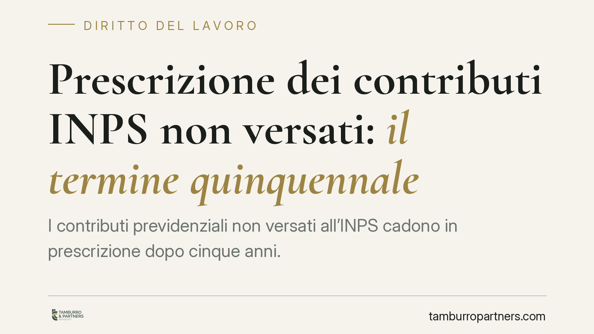

Prescrizione dei contributi INPS non versati: il termine quinquennale
I contributi previdenziali non versati all'INPS cadono in prescrizione dopo cinque anni. La Cassazione, con orientamento consolidato, ribadisce la rigidità di questo termine: una volta decorso, la posizione contributiva resta scoperta e il vuoto difficilmente recuperabile. Per il lavoratore la conseguenza è diretta, perché incide sull'importo della futura pensione. Vediamo come funziona e quali margini di tutela restano.

Inquadramento normativo
La disciplina è contenuta nell'art. 3, comma 9, della legge 8 agosto 1995, n. 335 (la cosiddetta riforma Dini). La norma stabilisce che il diritto dell'ente previdenziale a riscuotere i contributi non versati si prescrive in cinque anni. Prima del 1996 il termine ordinario era decennale; dal 1° gennaio 1996 opera in via generale quello quinquennale.
La prescrizione è il meccanismo per cui il decorso del tempo, unito all'inerzia del titolare, estingue un diritto. In materia contributiva questo significa che, trascorsi cinque anni senza atti idonei a interrompere il termine, l'INPS non può più pretendere i contributi dal datore di lavoro. Il termine si calcola dalla scadenza di ciascuna mensilità contributiva, con decorso distinto per ogni periodo.
Un punto va chiarito subito, perché genera equivoci frequenti. La prescrizione contributiva è irrinunciabile: l'INPS non può accettare versamenti relativi a periodi ormai prescritti, salvo casi tassativi. Questo distingue la materia previdenziale dai crediti ordinari, dove la prescrizione può essere rinunciata dal debitore.
Le precisazioni della Cassazione
La Corte di Cassazione, Sezione Lavoro, ha consolidato negli ultimi anni un orientamento rigoroso. Due indicazioni meritano attenzione.
La prima riguarda gli atti interruttivi. Solo determinate iniziative interrompono il termine: la richiesta scritta di pagamento da parte dell'INPS, l'avviso di addebito, il verbale ispettivo notificato. Non basta un comportamento generico o una segnalazione informale.
La seconda è più insidiosa. Le azioni legali promosse dal lavoratore nei confronti del datore — ad esempio una causa per il riconoscimento del rapporto di lavoro o per differenze retributive — non interrompono la prescrizione contributiva. Il credito contributivo appartiene all'INPS, non al lavoratore: quest'ultimo non può con la propria iniziativa incidere sul termine che riguarda un rapporto tra ente e datore.
Resta un margine per i debiti antecedenti al 1996. La denuncia del lavoratore all'INPS conserva efficacia interruttiva soltanto per i contributi maturati prima di quella data, ai quali si applica il previgente termine decennale.
Implicazioni pratiche
Per il lavoratore la conseguenza è concreta e spesso sottovalutata. Se il datore ha omesso i versamenti e sono decorsi cinque anni, quei contributi rischiano di essere persi in via definitiva. Il periodo scoperto non compare nell'estratto conto previdenziale e non concorre al calcolo della pensione.
Esiste una tutela alternativa: la costituzione di rendita vitalizia (art. 13, l. 1338/1962). Il lavoratore che dimostri il rapporto e l'omissione può chiedere all'INPS di ricostituire la posizione, versando lui stesso l'onere e poi rivalendosi sul datore. È uno strumento tecnico, con requisiti probatori stringenti, ma resta la principale via quando la prescrizione ha già operato a carico dell'ente.
Per il datore di lavoro, la prescrizione libera dall'obbligo verso l'INPS, ma non esclude la responsabilità risarcitoria verso il lavoratore per il danno pensionistico causato dall'omissione. Le due posizioni vanno tenute distinte.
Cosa fare in concreto
- Controlla periodicamente l'estratto conto contributivo sul portale INPS: è il primo strumento per individuare periodi scoperti prima che decorra il quinquennio.
- Segnala tempestivamente le omissioni all'INPS, con richiesta scritta e documentata, senza confidare nelle sole cause civili contro il datore.
- Conserva ogni prova del rapporto di lavoro: buste paga, contratti, comunicazioni, testimonianze utili in caso di ricostruzione della posizione.
- Valuta la costituzione di rendita vitalizia se il periodo è già prescritto: verifica con un professionista requisiti, onere economico e possibilità di rivalsa.
- Agisci senza attendere: in materia contributiva il tempo è il fattore decisivo e il termine quinquennale non ammette recuperi tardivi generalizzati.
Consigliamo di non trascurare i controlli periodici sulla propria posizione previdenziale: intervenire entro i cinque anni è quasi sempre più efficace, e meno costoso, di ogni ricostruzione successiva.
---
*Contributo informativo a cura di Tamburro & Partners - Avv. Giuseppe Tamburro. Non costituisce parere legale.*
Ogni storia di lavoro ha i suoi tempi.
Se gestisci HR e vuoi un confronto su contenzioso, ispezioni o licenziamenti, scrivi allo studio. Ti rispondiamo entro un giorno lavorativo.